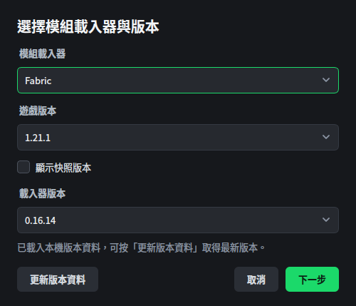
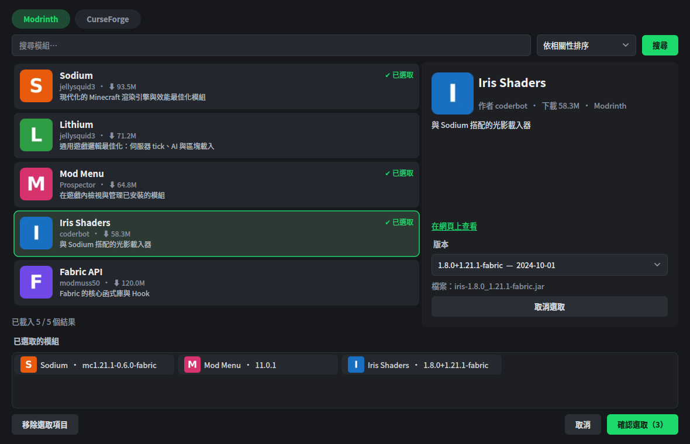
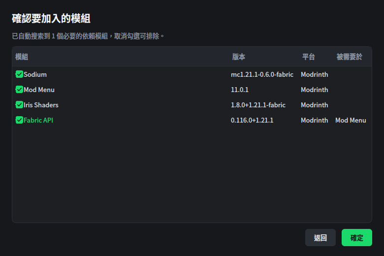
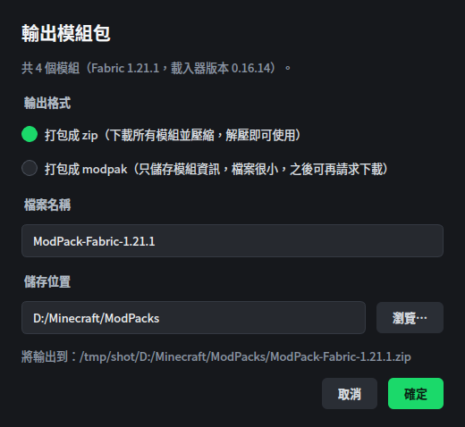

五個步驟:選載入器 → 搜尋 → 確認依賴 → 輸出 → 傳送。
Fabric / Quilt / Forge / NeoForge 與遊戲版本,版本資料直接從官方來源下載,不需要 Python。

左側是搜尋結果,右側是詳細資訊與版本選擇,底部是已選取清單。

自動搜索到的必要依賴會標示「被誰需要」,可自行取消勾選。

選 zip(下載全部模組並壓縮)或 modpak(只存資訊),名稱與位置由你決定。

| 建立模組包 | 選載入器與版本 → 搜尋 → 補依賴 → 確認 → 輸出 zip 或 modpak |
| 更新模組 | 選 .modpak,向託管平台請求更新,覆寫前備份為 .bak |
| 請求模組包檔案 | 依 mod.info 下載並驗證 sha256,打包成 zip |
| 更新 pak | 開啟既有 .modpak,新增 / 移除模組後另存或覆寫 |